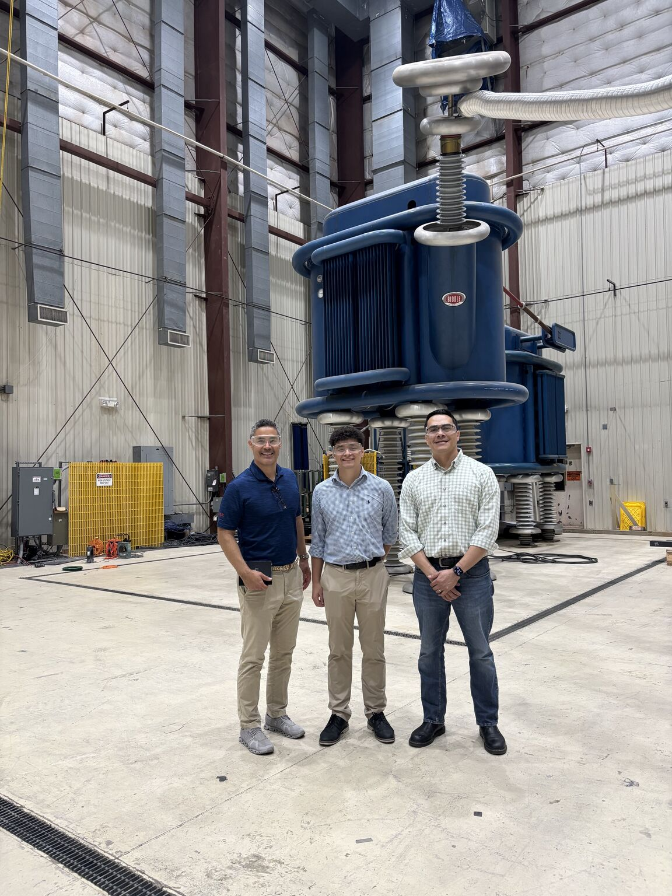
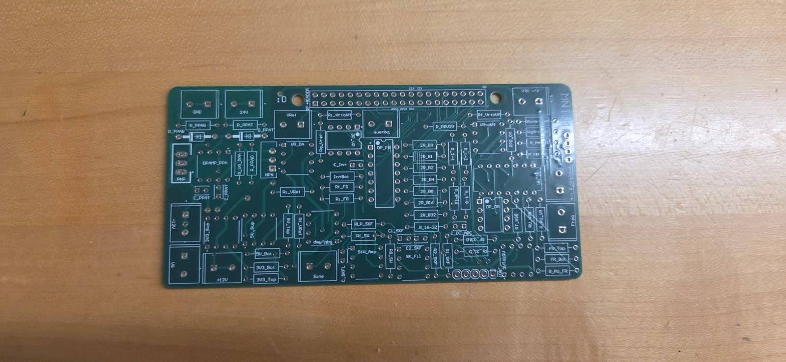
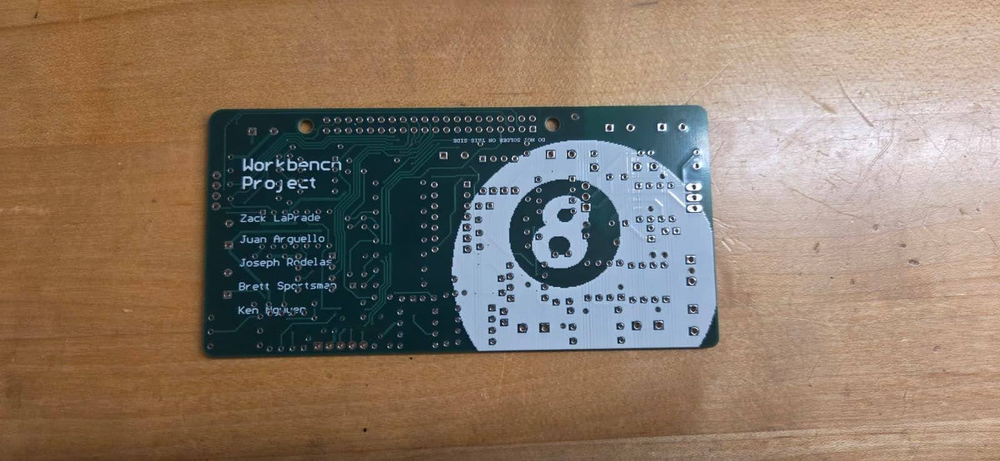

Juan Arguello ePortfolio
I am an Electrical Engineering student at the Georgia Institute of Technology, specializing in Circuit Technology and Electric Energy Systems. I am passionate about designing hardware solutions and optimizing power systems.

About Me
My journey into electrical engineering has been driven by a fascination with how raw electrical power is controlled, routed, and translated into intelligent action. I began my academic career at the University of Georgia, where I completed my first two years of university. Seeking to dive deeper into hardware architecture and power systems, I transferred to Georgia Tech.
At GT, I am pursuing the academic threads in Circuit Technology and Electric Energy Systems. My coursework and extracurriculars reflect a hands-on approach to engineering. Whether I am benchmarking neural networks or analyzing complex signal processing data with Python and MATLAB, I thrive in environments that challenge me to optimize and innovate.
Outside the lab and the classroom, I believe in maintaining a strong balance between mental and physical discipline. During my free time you can catch me working out, playing golf, or spending quality time with friends and family.
Resume & Experience
Core Skills
CME NEXT Pro Engineering Intern
CME Wire & Cable | Summer 2026

During my time at CME Wire & Cable, I gained invaluable exposure to the realities of medium-voltage underground distribution and utility-scale power systems. I conducted extensive cable ampacity and sag simulations to ensure our products met strict environmental and electrical tolerances.
Beyond simulation, I developed automated tools using Python and Streamlit to streamline our medium-voltage cable qualification data analysis. My comprehensive data analysis and quality assurance reviews ultimately provided the justification for a $250,000 investment in new QA testing procedures.
Supply Chain Analyst Intern
OPTIMUS Distribution LLC | Summer 2024
Analyzed technical specifications for spun concrete lighting and power line poles for major utility clients like Florida Power & Light, ensuring technical compliance and logistical efficiency.
Career Goals
My aspiration is to become a lead hardware or power systems engineer, designing and integrating scalable electrical infrastructure for major industrial and utility applications.
Short-Term (1-2 Years)
Complete core Electrical Engineering classes. Secure a summer engineering internship with an industry leader to gain direct field and design experience.
Mid-Term (2-4 Years)
Graduate from Georgia Tech. Transition into a full-time engineering role focused on power systems or analog circuit design.
Long-Term (5+ Years)
Transition into technical leadership, managing large-scale hardware integration projects or utility-scale power systems. Mentor junior engineers and potentially pursue a master's degree or MBA.
Technical Portfolio
Embedded Systems Design Project
Hardware Measurement & Automation (ECSE 2920)

Custom PCB Layout (Front)

Custom PCB Layout (Back)
A team-based academic project focused on engineering an automated hardware test-bench to facilitate data acquisition and signal processing. Working alongside my teammate Zack in the Driftmier engineering labs, we synthesized a 24V AC/DC power supply to drive the entire system architecture. This project required us to move from breadboard prototyping to a fully printed and soldered PCB, ensuring clean traces and minimal signal interference.
- Developed a Raspberry Pi 4-based integrated test-bench designed for automated hardware characterization, featuring a custom-routed printed circuit board (PCB) to handle diverse signal loads.
- Designed and integrated high-precision instrumentation modules, including a discrete 5-bit SAR ADC, a digital voltmeter, an ohmmeter, a function generator, and a stable voltage source.
- Implemented modular Python software to automate hardware initialization, parse incoming sensor data, and execute real-time control sequences from the Raspberry Pi interface.
MicroMouse | IEEE (UGA)
Embedded Systems Research and Development
A team-based robotics initiative focused on designing and programming an autonomous maze-solving robot. My focus was primarily on software architecture, sensor integration, and control systems. This required tight optimization of firmware running on STM32 microcontrollers to ensure the robot could process environmental data rapidly enough to maintain momentum through the maze.
- Engineered a 6-channel infrared sensor polling system using dual STM32 ADCs to facilitate obstacle navigation in real time and allow consistent wall-following logic.
- Implemented a PID control algorithm based on differential error between front-inward sensors, enabling precise steering corrections and stable positioning throughout the maze at high speeds.
- Managed the code repository using GitHub, collaborating with the team and performing code review with VS Code's integrated Git environment to maintain a clean codebase.